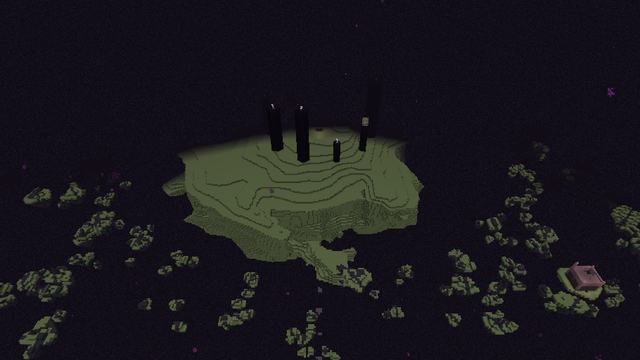
Shattered Rim
The Ancients' wrecked approach: broken Voidstone islands from 150 to 1,024 blocks out, round the main island. Its inner ring lies inside the Ward, the last way in.
Ruins: Rim Outposts
The main island stays as it was. Round it lies the Shattered Rim; past 1,024 blocks, the outer lands, each with something only it has; at the far edge, the place the Ancients never finished.

The Ancients' wrecked approach: broken Voidstone islands from 150 to 1,024 blocks out, round the main island. Its inner ring lies inside the Ward, the last way in.
Ruins: Rim Outposts
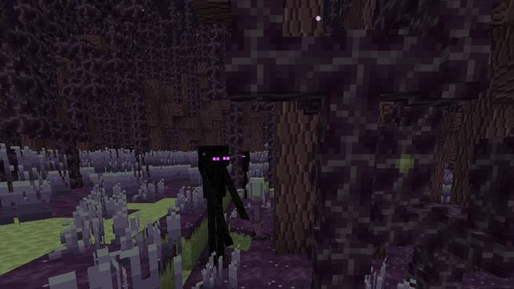
Chorus Thicket, where chorus grows into trees
Ruins: Void Shrines
Constructs: Chorus Weaver
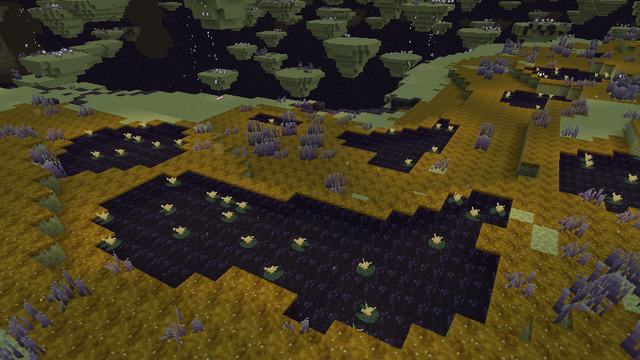
Lumen Mire, where Lumen grows by slowing pools
Ruins: Void Shrines
Constructs: Lumen Wisp
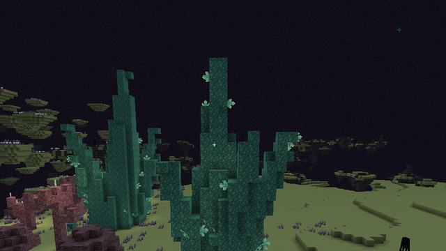
Resonant Spires, where Resonite grows
Ruins: Void Shrines, Fallen Observatories
Skyfall Archipelago, where Drift Blossoms grow on islets linked by updrafts
Ruins: Void Shrines
Void currents and updrafts
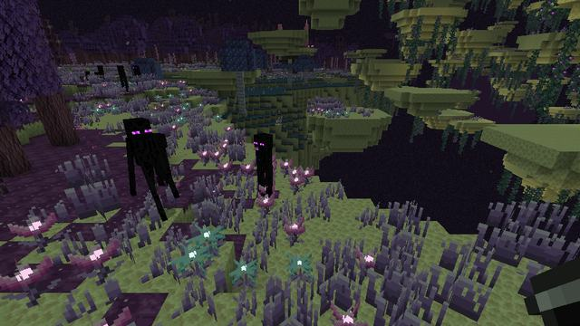
In the outer End, find Bloom Meadows, where Ender Blooms and Starflowers glow in the grass, each a dye
Ruins: Void Shrines
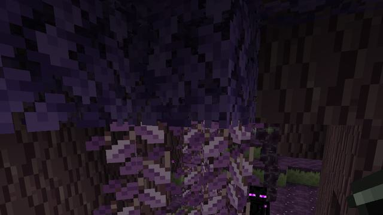
Chorus Canopy, where chorus trees grow leaves, sprouts and climbing vines
Ruins: Void Shrines
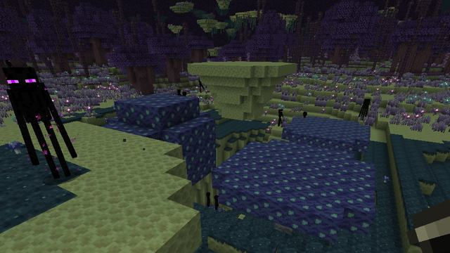
Void Fungus Barrens, where Void Mushrooms grow huge, good for a stew that slows your fall
Ruins: Void Shrines
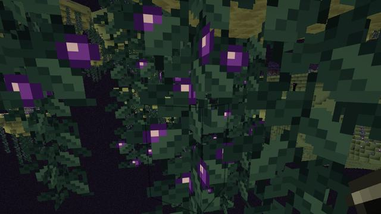
Hanging Gardens, where Void Berries glow on vines under the islets
Ruins: Void Shrines
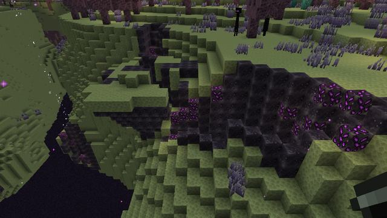
Voidscar Wastes, where Voidsteel Scrap glows in the rift walls
Ruins: Void Shrines, Rift Maws
Constructs: Rift Stalker
Void currents and updrafts
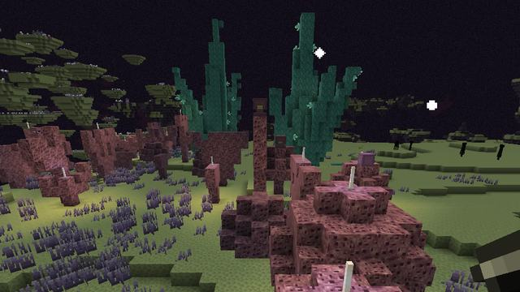
Shulker Reefs, where Ancient Purpur grows as coral and wild shulkers keep it
Ruins: Void Shrines, Shulker Foundries
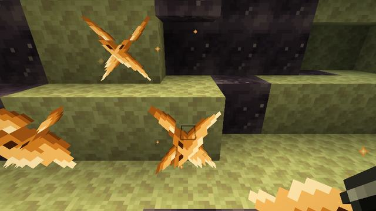
Hollow Highlands, where Echo Amber glows in the caverns under the islands
Ruins: Void Shrines, Fallen Observatories
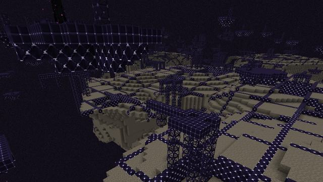
From about 8,000 blocks out (give or take 600), where the Ancients' work simply stopped: scaffolding and raw lattice on their grid. A Lattice Crawler can tear lattice out from under you; it re-forms.
Ruins: Unfinished Citadels
Constructs: Lattice Crawler
Besides the Waystations where you arrive, six kinds of ruin are found in the End. Vanilla's End Cities stay, and appear in the new highland and midland lands too.
| Ruin | Where | Holds | In its chest |
|---|---|---|---|
| Void Shrine | every outer land, End Highlands, End Midlands, End Barrens, Small End Islands | A Shrine Altar, a dormant Rift Gate and a pair of Purpur Sentries | No chest |
| Fallen Observatory | Hollow Highlands, Resonant Spires, End Highlands | A Star Chart Desk and its guarding Sentries | Ancient Tablet, Ancient Purpur Scrap, Echo Amber, Lumen, Ender Pearl, Spyglass, Amethyst Shard, Resonite Shard |
| Shulker Foundry | Shulker Reefs, End Midlands | The Hollow Sentinel and the first seal | Ancient Tablet, Ancient Purpur Scrap, Resonite Shard, Ender Pearl, Shulker Shell, Crystal Fragment, Diamond, Star Chart |
| Rift Maw | Voidscar Wastes, End Barrens | The Void Leviathan and the second seal, over a pool open to the void | Ancient Tablet, Voidsteel Scrap, Echo Amber, Rift Dust, Ender Pearl, Resonite Ingot, Diamond |
| Unfinished Citadel | Unfinished Edge, End Highlands, End Midlands, End Barrens, Small End Islands, 7,400 or more blocks out | The Architect and the last seal, behind the Amber Gate | Ancient Tablet, Raw Lattice, Starmetal, Echo Amber, Voidsteel Scrap, Ender Pearl, Diamond |
| Rim Outpost | Shattered Rim, 170 to 430 blocks out | Ancient Tablets and loot, inside the Ward | Ender Pearl, Golden Apple, Arrow, Resonite Shard, Echo Amber, Gold Ingot, Voidstone Bricks, Diamond, Ancient Tablet |